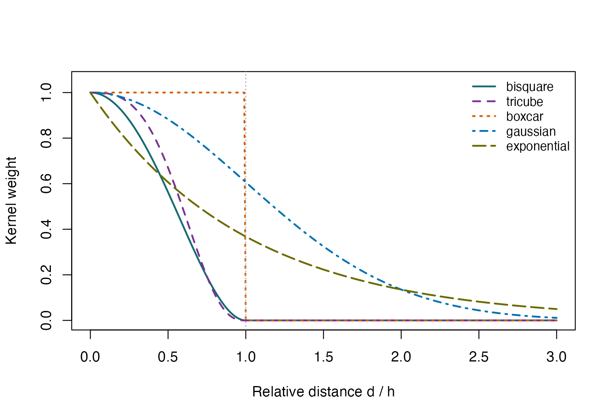
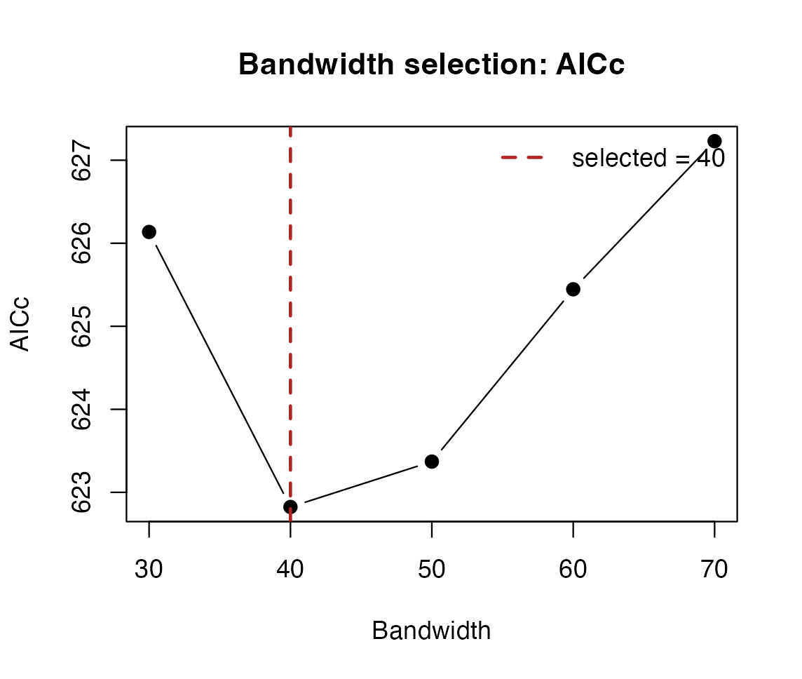
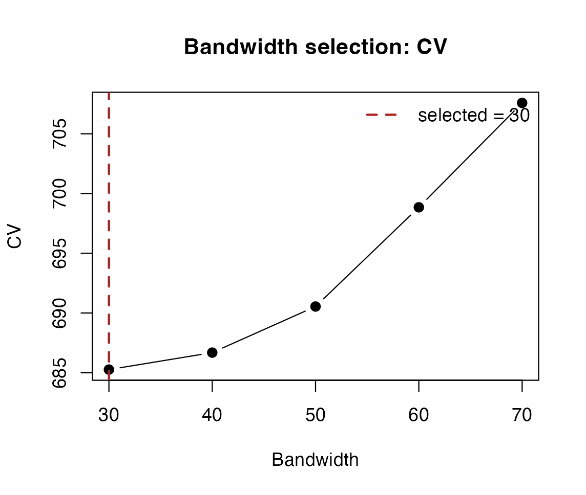

LHWR: Kernels, Bandwidth Selection and Diagnostics
Bahadır Yüzbaşı and Zühal Küçükarslan Yüzbaşı
Source:vignettes/lhwr-diagnostics-and-tuning.Rmd
lhwr-diagnostics-and-tuning.RmdWhat this guide covers
This companion to the introduction explains the decisions between supplying coordinates and reporting a fitted Gaussian LHWR model. The graphics gallery shows how to display the resulting quantities. The separate Lasso guide covers penalized tuning: its active sets and selection criteria must not be confused with unpenalized coefficient inference.
All examples are small, offline documentation checks, not a new empirical study. They reuse the introduction’s 141-country WDI 2024 sample, response, standardized regressors, stored representation and five-candidate grid. No observations are removed or imputed. Standardization below applies to the two regression predictors, not to the supplied Lorentz coordinates.
data("wdi_lhwr")
wdi <- subset(wdi_lhwr, year == 2024)
Z <- as.matrix(wdi[, c("z0_lorentz", "z1_lorentz", "z2_lorentz")])
dat <- data.frame(gdp_growth = wdi$gdp_growth,
unemployment = as.numeric(scale(wdi$unemployment)),
internet_users = as.numeric(scale(wdi$internet_users)))
form <- gdp_growth ~ unemployment + internet_users
candidate_k <- seq(30, 70, by = 10)
stopifnot(nrow(dat) == 141L, !anyNA(dat), nrow(Z) == nrow(dat))Kernel shape is different from bandwidth
Let d_{ij}\geq0 be the chosen distance between observations i and j, and h_i>0 a local distance radius. Kernel weights are w_{ij}=K(u_{ij}), where u_{ij}=d_{ij}/h_i is dimensionless. The kernel sets how quickly influence decays with relative distance; the radius sets the scale of the neighbourhood. The five implemented functions are shown below for u\geq0. Compact kernels are zero at u=1, not only outside the radius.
| Kernel | K(u) | Support |
|---|---|---|
| bisquare | (1-u2)2 for u<1; 0 otherwise | Compact |
| tricube | (1-u3)3 for u<1; 0 otherwise | Compact |
| boxcar | 1 for u<1; 0 otherwise | Compact |
| gaussian | exp(-u^2/2) | Noncompact |
| exponential | exp(-u) | Noncompact |
kernel_names <- c("bisquare", "tricube", "boxcar", "gaussian", "exponential")
u <- seq(0, 3, length.out = 301)
kernel_weights <- sapply(kernel_names, function(k) hgwr_kernel(u, 1, k))
kernel_cols <- c("#176B72", "#7B3294", "#D55E00", "#0072B2", "#6B6B00")
matplot(u, kernel_weights, type = "l", lty = seq_along(kernel_names),
col = kernel_cols, lwd = 2, xlab = "Relative distance d / h",
ylab = "Kernel weight", ylim = c(0, 1.05))
abline(v = 1, lty = 3, col = "grey65")
legend("topright", kernel_names, col = kernel_cols,
lty = seq_along(kernel_names), lwd = 2, bty = "n", cex = 0.85)
Kernel weights versus distance divided by bandwidth. Gaussian and exponential weights remain positive beyond the radius; the three compact kernels have zero boundary weight.
Changing a kernel changes the estimator. Comparing kernels requires the same analysis sample, representation and a declared selection protocol; these curves do not establish that one kernel is best. Do not truncate a Gaussian or exponential kernel merely to obtain a faster computation.
What bw, adaptive and engine
mean
| Setting | Meaning of scalar bw | Engine |
|---|---|---|
| adaptive=TRUE, bandwidth_type=‘knn’ | Target positive-distance neighbour rank k | dense or supported knn |
| adaptive=FALSE, bandwidth_type=‘knn’ | Fixed distance radius h | dense |
| adaptive=FALSE, bandwidth_type=‘volume’ | Fixed hyperbolic ball area V | dense |
| adaptive=TRUE, bandwidth_type=‘volume’ | Target local mass; radius obtained using a pilot density | dense |
For adaptive kNN bandwidths, the radius is the distance to the
requested positive-distance neighbour rank. The focal observation has
zero distance and is used in calibration, but does not count toward that
positive-distance rank. Coincident points and boundary ties make
bw different from the count of strictly positive regression
weights. Inspect local_n_positive and
local_neff rather than reporting bw as an
effective sample size.
For the two-dimensional unit-curvature model, ball area and its
inverse are V(h)=2\pi(\cosh h-1) and
h(V)=\operatorname{arcosh}\{1+V/(2\pi)\}, for
h,V\geq0. These convert between
intrinsic radius and area. In adaptive-volume mode, pilot_k
supplies the pilot neighbour rank used to estimate local point density;
target mass divided by that density gives a target area, which is then
inverted. This is a different bandwidth rule, not another name for
kNN.
The kNN engine is a computational choice: exact
Lorentz neighbours with adaptive kNN bandwidths and
bisquare, tricube or boxcar
kernels. It does not support tangent geometry, supplied
dMat, fixed radii, volume bandwidths, Gaussian or
exponential kernels. Use engine="dense" for those cases.
The dense engine stores an n-by-n distance matrix; kNN reduces that storage,
but some post-fit diagnostics still reconstruct dense operators.
n_threads=1 is the reproducible serial default, not a
statistical parameter.
AICc and CV select a bandwidth; AIC and BIC summarize a fit
For a Gaussian LHWR fit, let n be the sample size, S its conditional smoother matrix such that \widehat y=Sy, and R=\sum_i(y_i-\widehat y_i)^2>0 its residual sum of squares. Define t=\operatorname{tr}(S), the smoother trace. The implementation uses the Gaussian deviance-like quantity D=n\log(R/n)+n\log(2\pi)+n and the following information criteria:
\begin{aligned} \mathrm{AIC}&=D+2(t+1),\\ \mathrm{AICc}&=D+\frac{2n(t+1)}{n-t-2},\\ \mathrm{BIC}&=D+\log(n)(t+1). \end{aligned}\tag{1}
Equation (1) balances calibration fit and conditional model complexity; the extra one accounts for the variance parameter. AICc requires n-t-2>0; the package assigns an infinite score otherwise. The trace is not the number of predictors. These working smoother criteria do not add a penalty for learning the representation or searching over representations. Scores are comparable only under a common response, sample and likelihood convention; a smaller score is not a hypothesis-test p-value.
Gaussian CV instead evaluates \mathrm{CV}(b)=\sum_i\{y_i-\widehat y_{i,b}^{(-i)}\}^2, where b is a candidate bandwidth and \widehat y_{i,b}^{(-i)} omits observation i’s response from its local calibration. This is a sum of squared errors. The supplied coordinates and candidate neighbourhood radii remain fixed during this internal score. It is not an outer validation of an embedding-plus-tuning pipeline and does not reselect bandwidth inside each held-out case. Binary-response CV uses Bernoulli log loss instead; Gaussian AICc and F diagnostics are not defined for binomial fits.
bw_aicc <- bw.lhwr(form, dat, Z = Z, bw_grid = candidate_k,
approach = "AICc", kernel = "bisquare", engine = "knn")
bw_cv <- bw.lhwr(form, dat, Z = Z, bw_grid = candidate_k,
approach = "CV", kernel = "bisquare", engine = "knn")
knitr::kable(data.frame(Criterion = c("AICc", "CV"),
Selected_k = c(bw_aicc$bw, bw_cv$bw),
Score = c(bw_aicc$score, bw_cv$score)), digits = 3,
caption = "Two criteria applied to exactly the same five candidates.")| Criterion | Selected_k | Score |
|---|---|---|
| AICc | 40 | 622.824 |
| CV | 30 | 685.267 |
plot_lhwr_diagnostics(bw_aicc, type = "bandwidth")
plot_lhwr_diagnostics(bw_cv, type = "bandwidth")

Left: AICc. Right: leave-one-out squared-error CV over the same neighbour counts. Vertical scales differ because the criteria have different units.
bw.lhwr() accepts approach="AICc" or
"CV", not "AIC" or
"BIC". AIC and BIC can be extracted after fitting. An
explicit bw_grid selects grid search; otherwise the default
is golden-section search over an interval controlled by
lower, upper, tol and
max_iter. The selected minimum is among evaluated
candidates, not proof of a global minimum over every possible bandwidth.
Boundary selections warrant review of support and search range, not
automatic widening until a desired result appears.
selection.table records the evaluated candidates and
scores.
fit <- lhwr(form, dat, Z = Z, bw = bw_aicc$bw, kernel = "bisquare",
engine = "knn", diagnostics = "full", f_tests = FALSE)
diag_fit <- fit$LHWR.diagnostic
knitr::kable(data.frame(Quantity = c("RSS", "AIC", "AICc", "BIC", "tr(S)", "edf"),
Value = unlist(diag_fit[c("RSS.gw", "AIC", "AICc", "BIC", "tr.S", "edf")])),
digits = 3, caption = "Post-fit Gaussian diagnostics from the AICc-selected fit.")| Quantity | Value | |
|---|---|---|
| RSS.gw | RSS | 456.092 |
| AIC | AIC | 612.854 |
| AICc | AICc | 622.824 |
| BIC | BIC | 682.428 |
| tr.S | tr(S) | 22.594 |
| edf | edf | 110.958 |
CV.lhwr(bw_cv)
#> [1] 685.2671CV.lhwr(fit) may return NA when no CV score
was computed for that object; it does not start a new cross-validation.
Likewise diagnostics="none" does not contain the hat-matrix
quantities needed for AICc or F tests. diagnostics="aicc"
computes trace-based summaries but omits local standard errors;
"full" supplies the local inference quantities used
below.
Local design and coefficient uncertainty
For weights w_{ij}, effective local support is n_{\mathrm{eff},i}=(\sum_j w_{ij})^2/\sum_j w_{ij}^2, provided the denominator is positive. It reflects uneven influence, not an independent sample size that makes local observations exchangeable. Condition numbers, weighted local VIFs and rank diagnostics address estimability. They do not test whether a representation is intrinsically hyperbolic.
lc <- local_collinearity(fit)
inf <- local_inference(fit, alpha = 0.05, df = "edf",
adjust = "BH", adjust_scope = "coefficient")
knitr::kable(head(lc$condition_number), digits = 3,
caption = "Local design diagnostics for the first observations.")| observation_id | local_CN | flag_CN |
|---|---|---|
| 1 | 1.060 | FALSE |
| 2 | 1.335 | FALSE |
| 3 | 1.462 | FALSE |
| 4 | 1.393 | FALSE |
| 5 | 1.293 | FALSE |
| 6 | 1.368 | FALSE |
knitr::kable(head(inf$local[, c("observation_id", "coefficient", "estimate",
"se", "t_value", "p_value", "p_adjusted")]),
digits = 3, caption = "Conditional exploratory local coefficient tests.")| observation_id | coefficient | estimate | se | t_value | p_value | p_adjusted |
|---|---|---|---|---|---|---|
| 1 | Intercept | 3.457 | 0.516 | 6.696 | 0.000 | 0.000 |
| 2 | Intercept | 2.475 | 0.524 | 4.721 | 0.000 | 0.000 |
| 3 | Intercept | 2.362 | 0.553 | 4.270 | 0.000 | 0.000 |
| 4 | Intercept | 4.810 | 0.605 | 7.947 | 0.000 | 0.000 |
| 5 | Intercept | 1.677 | 1.344 | 1.247 | 0.215 | 0.224 |
| 6 | Intercept | 4.416 | 1.406 | 3.142 | 0.002 | 0.003 |
Here a local t-value is the coefficient estimate divided by its
standard error. df="edf" uses n-2\operatorname{tr}(S)+\operatorname{tr}(S^\top
S); df="residual" uses n-\operatorname{tr}(S), while
"normal" uses a normal reference. These are distinct
conventions, not interchangeable labels.
adjust_scope="coefficient" adjusts across locations
separately for each coefficient; "global" adjusts across
all location-coefficient pairs. Neither choice accounts for selecting
the bandwidth or estimating the representation. Multiplicity adjustment
alone does not establish valid post-selection inference or
false-discovery control here.
Conditional F1, F2 and F3 diagnostics
diagnostic_tests() implements Leung-type moment-matched
diagnostics (Leung, Mei and Zhang, 2000), using the LHWR smoother rather
than geographic weights. They are not the usual exact nested-model
anova() F tests. For fixed coordinates, weights and
bandwidth, define R_H=(I_n-S)^\top(I_n-S), where I_n is the identity matrix, \delta_1=\operatorname{tr}(R_H) and \delta_2=\operatorname{tr}(R_H^2). Let R_0 be the OLS RSS on the same response and
model matrix, with \nu_0=n-p, where
p includes the intercept. The two
global statistics are
F_1=\frac{R/\delta_1}{R_0/\nu_0},\qquad F_2=\frac{(R_0-R)/\eta_1}{R_0/\nu_0},\qquad \eta_1=\nu_0-\delta_1,\quad \eta_2=\nu_0-2\delta_1+\delta_2.\tag{2}
Equation (2) contrasts local and global residual variation. F1 uses a lower-tail F reference with degrees of freedom (\delta_1^2/\delta_2,\nu_0); F2 uses an upper-tail reference with (\eta_1^2/\eta_2,\nu_0). A negative RSS improvement is not evidence for locality. Required variances, moments and reference degrees of freedom must be positive; an undefined p-value must not be replaced with zero.
F3 asks a different question: whether a particular coefficient is constant over the representation. For coefficient j, let B_jy collect its n local estimates, C_0=I_n-\mathbf1\mathbf1^\top/n be the centring matrix, and C_j=B_j^\top C_0B_j/n. Here \mathbf1 is the vector of ones. Define \gamma_{1j}=\operatorname{tr}(C_j), \gamma_{2j}=\operatorname{tr}(C_j^2) and V_j^2=y^\top C_jy, the spatial variance of the coefficient estimates. Then the coefficient-specific statistic is
F_{3,j}=\frac{V_j^2/\gamma_{1j}}{R/\delta_1}.\tag{3}
Equation (3) compares coefficient variation with residual noise, using an upper-tail reference with degrees of freedom (\gamma_{1j}^2/\gamma_{2j},\delta_1^2/\delta_2). It tests a working constancy hypothesis, not whether the coefficient is zero at one location. The reference laws are approximate: their quadratic forms are generally dependent. Stationary coefficients and independent homoskedastic Gaussian errors motivate them; response-selected bandwidths, correlated errors and varying nuisance coefficients limit calibration.
ft <- diagnostic_tests(fit)
knitr::kable(ft$global_tests, digits = 4,
caption = "Conditional global F diagnostics, with moment-based degrees of freedom.")| Test | Null_Hypothesis | F | df1 | df2 | p_value |
|---|---|---|---|---|---|
| F1 | LHWR does not improve upon OLS | 0.7079 | 120.2173 | 138 | 0.0263 |
| F2 | Global OLS specification is adequate | 2.1986 | 39.5361 | 138 | 0.0004 |
knitr::kable(ft$coefficient_tests, digits = 4,
caption = "F3 diagnostics for coefficient constancy, not pointwise nonzero effects.")| Coefficient | F3 | df1 | df2 | p_value |
|---|---|---|---|---|
| Intercept | 1.7640 | 5.1410 | 120.2173 | 0.1234 |
| unemployment | 3.2640 | 5.7187 | 120.2173 | 0.0060 |
| internet_users | 2.1798 | 5.4704 | 120.2173 | 0.0551 |
Alternatively request f_tests=TRUE during
lhwr() and read $Ftests. The default is
FALSE because reconstructing coefficient operators can be
costly. The fitted Gaussian model must have hat-matrix diagnostics. By
default the stored OLS model ensures the same formula and observations;
if supplying ols_model, verify its response, design columns
and row order, not just its row count. engine="cpp" and the
small-data reference engine="R" concern diagnostic
computation, not bandwidth selection.
Global Moran and local LISA are residual diagnostics
Diagnostic weights W=(w_{ij}^{(H)})
are a separate, declared choice. They have zero diagonal, so a residual
is not its own neighbour. With row_standardize=TRUE, each
nonempty row sums to one. These are economic representation
neighbourhoods in this example, not geographic adjacency. Do not assume
the defaults automatically reproduce a nondefault fit’s kernel, geometry
or fixed/volume bandwidth rule: supply settings explicitly.
For residuals e_i=y_i-\widehat y_i, define their mean \bar e, centred values z_i=e_i-\bar e, m_2=n^{-1}\sum_i z_i^2, and S_0=\sum_{i,j}w_{ij}^{(H)}. Moran’s global statistic and the local indicators (Moran, 1950; Anselin, 1995) are
I_H=\frac{n}{S_0}\frac{\sum_{i,j}w_{ij}^{(H)}z_i z_j}{\sum_i z_i^2}, \qquad I_i^{(H)}=\frac{z_i\sum_jw_{ij}^{(H)}z_j}{m_2}.\tag{4}
Equation (4) requires nonconstant residuals and positive total weight. Global Moran summarizes association over the whole sample. LISA localizes it: high–high and low–low are concordant residual patterns; high–low and low–high are discordant residual outliers. High and low refer to the signs of the centred residual and its weighted lag, not the response level or the sign of a coefficient. Local indicators need not reproduce the conclusion of a global test.
permutations <- 99L
permutation_seed <- 20260714L
mi <- moran.lhwr(fit, distance = "lorentz", kernel = "bisquare",
adaptive = TRUE, k = bw_aicc$bw, row_standardize = TRUE,
permutations = permutations, seed = permutation_seed)
lisa <- local_moran.lhwr(fit, distance = "lorentz", kernel = "bisquare",
adaptive = TRUE, k = bw_aicc$bw, row_standardize = TRUE,
permutations = permutations, seed = permutation_seed)
knitr::kable(data.frame(I = mi$I, Expected_under_permutation = mi$expected_I,
Raw_p = mi$p_value, Permutations = mi$permutations), digits = 4,
caption = "Global residual association under the specified diagnostic weights.")| I | Expected_under_permutation | Raw_p | Permutations |
|---|---|---|---|
| -0.0383 | -0.0071 | 0.14 | 99 |
knitr::kable(as.data.frame(table(lisa$cluster_type)),
col.names = c("Raw local classification", "Count"),
caption = "LISA labels using the package's raw p <= 0.05 classification.")| Raw local classification | Count |
|---|---|
| Not Significant | 140 |
| High-High | 0 |
| Low-Low | 0 |
| Low-High | 1 |
| High-Low | 0 |
The implementation permutes the entire centred
residual vector for LISA; it does not hold the focal residual fixed as
in conditional local randomization. Two-sided absolute deviations are
measured from the permutation mean for each local statistic, and from
-1/(n-1) for global Moran. This global
expectation assumes uniform permutations of a fixed nonconstant vector
and fixed zero-diagonal weights; it is not the sampling expectation of
fitted LHWR residuals. P-values use a plus-one correction, giving
increments of 1/(B+1) with B permutations. The 99-permutation example is
coarse and retained for a quick, reproducible tutorial; it is not a
universal precision recommendation. permutations=0 returns
statistics without permutation p-values. Record the seed separately: the
local result does not store every permutation setting as metadata.
cluster_type uses raw p_value <= 0.05.
Changing alpha in plot(lisa) only masks points
when significant_only=TRUE; it does not recalculate the
stored classes or apply a multiple-testing adjustment. The gallery shows
an explicit reclassification for a different display rule. Unflagged
means not flagged by that rule, not proven independence. A significant
residual statistic indicates remaining structure, not improved fitting
by itself.
Explicit weights and nondefault kernels
The Moran/LISA kernel argument directly accepts
bisquare, Gaussian and exponential. The regression functions accept five
kernels. To use tricube or boxcar diagnostically, or to make the weight
definition fully explicit, pass W. For example, the
following reconstructs the current bisquare diagnostic using the
calibrated radii and verifies agreement:
D <- hyperbolic_distance_matrix(Z, check = FALSE)
W <- t(vapply(seq_len(nrow(Z)), function(i) {
hgwr_kernel(D[i, ], fit$bandwidth[i], kernel = "bisquare")
}, numeric(nrow(Z))))
diag(W) <- 0
stopifnot(all(rowSums(W) > 0))
W <- W / rowSums(W)
mi_explicit <- moran.lhwr(fit, W = W, permutations = 0)
stopifnot(abs(mi_explicit$I - mi$I) < 1e-10)Changing the kernel in this construction is a diagnostic sensitivity
analysis, not a refit. Preserve the original diagnostic and report the
changed weights. When W is supplied, the matrix determines
the weights; record its actual construction rather than interpreting the
function’s default distance/kernel labels as provenance. Validate its
size, finite nonnegative values, row order, diagonal and isolated rows
before calling the diagnostics.
Stored kNN lists are reused only for compact bisquare diagnostic
weights. For Gaussian and exponential diagnostics, the adaptive
k-neighbour radius still defines the bandwidth, but weights are
evaluated over the full distance matrix: nonzero tails are not
truncated. This requires quadratic memory in the sample size. An
explicitly constructed full W remains
useful for auditable sensitivity checks. Bisquare diagnostics are
unchanged; correcting the noncompact path does not revise any stored
historical analysis.
Reporting checklist
Report the response, predictors and units; coordinate construction and row alignment; geometry, kernel and bandwidth rule; evaluated candidates and selection criterion; diagnostic detail and local support; F reference and local adjustment conventions; residual weight matrix, permutations and seed; and software version. Keep calibration, conditional diagnostics and independent predictive evaluation distinct. None of these diagnostics alone establishes causality, validates a learned representation or guarantees that LHWR must outperform a global model.
packageVersion("LHWL")
#> [1] '0.3.1'References
Anselin, L. (1995). Local indicators of spatial association–LISA. Geographical Analysis, 27(2), 93–115.
Leung, Y., Mei, C.-L., and Zhang, W.-X. (2000). Statistical tests for spatial nonstationarity based on the geographically weighted regression model. Environment and Planning A, 32(1), 9–32.
Moran, P. A. P. (1950). Notes on continuous stochastic phenomena. Biometrika, 37(1/2), 17–23.